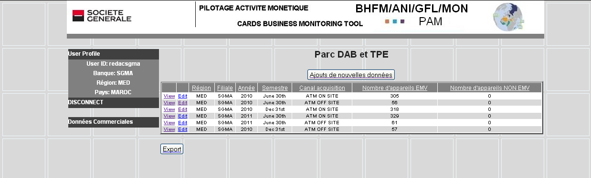

Tables des matières Fermer la fenêtre
Dans le domaine des données commerciales :
o Lorsque vous cliquez sur le nom d’une table dans le menu un tableau correspondant est affiché présentant les données sous forme réduite : une partie des données sont présentées.
o Vous pouvez trier les enregistrements des tables par ordre croissant ou décroissant, en cliquant sur les en-têtes des colonnes des tables.
o S’il y a plus d’enregistrements que ne peut en afficher l’écran, un système de pagination apparait et vous permet d’afficher le reste des données. Cliquez pour cela sur les boutons Suivant et Précédent situés au dessus de la table.
o Notez qu’il est possible de faire un copier coller du tableau présenté à l’écran dans une feuille Excel.
o Exemple de l’affichage de la table Portfolio DAB-TPE :

Vous disposez d’un bouton Export vous permettant d’exporter toutes les données contenues dans la table dans une feuille EXCEL.